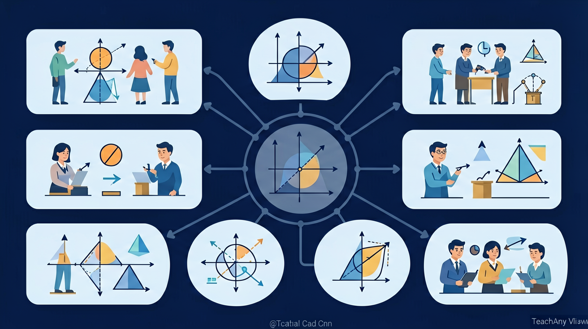

🎯 能说出圆面积公式S=πr²的推导过程
🎯 能判断给定半径/直径的圆面积计算步骤
🎯 能分析圆面积与半径平方的比例关系
知道圆心、半径、直径及其关系
掌握 C = 2πr 和 C = πd
掌握 S = πr² 并应用
❓ 为什么披萨越大越划算？
❓ 车轮为什么必须是圆的？
❓ 操场画圆比赛怎么保证公平？
学完这一课，这些问题你都能自信地回答。
圆的半径扩大到原来的 2 倍，面积会扩大到原来的几倍？
🌍 And（已知）：我们已经学会了计算周长
⚡ But（问题）：但周长只能量出边界的长度，无法描述图形占了多大的地方
💡 Therefore（新知）：因此我们学习面积，它度量的是图形所占平面的大小
🔴 圆心O：圆的中心点，用字母O表示
📏 半径r：从圆心到圆上任意一点的距离，同一圆内半径都相等
📐 直径d：经过圆心且两端都在圆上的线段，d = 2r
Step 1：一个圆的半径是5cm，它的直径是多少？
Step 2：同一个圆内，所有半径的长度……
Step 3：直径d = 14cm，半径r = ？
半径转一圈就画出了圆！圆上所有点到圆心的距离（半径）都相等！
圆周率 π = 周长 ÷ 直径，任何圆都一样，π ≈ 3.14
例：r = 3cm → C = 2 × 3.14 × 3 = 18.84 cm
Step 1：周长公式是？
Step 2：代入r=4：C = 2 × 3.14 × 4 = ？
Step 3：圆的周长是多少？单位？
把圆切割成无数扇形，拼成近似矩形：
矩形的长 ≈ C/2 = πr，宽 = r
所以面积 = 长×宽 = πr × r = πr²
周长（C=2πr）是一维的"边线长度"，面积（S=πr²）是二维的"内部面积"。半径加倍时，周长×2，面积×4！
Step 1：已知直径d=10cm，先求半径r=？
Step 2：面积公式 S = πr²，r=5，r² = ？
Step 3：S = 3.14 × 25 = ？
🚲 自行车轮半径0.35m → 周长 C = 2×3.14×0.35 ≈ 2.2m
🍕 比萨半径15cm → 面积 S = 3.14×225 ≈ 706.5 cm²
🌍 地球赤道半径约6371km → 周长约 4万km
一个圆形花坛，半径是3m，求它的周长和面积。
三道题检验「圆的认识与面积」的掌握情况，做错也别急，看解析再回到对应模块复习。
第1题：半径 4 cm 的圆，面积是多少？（π 取 3.14）
第2题：直径 10 cm 的圆，周长是多少？（π 取 3.14）
第3题：半径扩大到原来的 2 倍，圆面积变成原来的几倍？
✅ 圆的组成：圆心O、半径r、直径d（d=2r）
✅ 圆周率π≈3.14：任何圆的周长/直径都等于π
✅ 周长公式：C = 2πr = πd
✅ 面积公式：S = πr²
面积是平面的大小，平方单位来度量；长方形面积长乘宽，正方形边长的平方
💡 常见错误往往就在细节中，仔细检查每一步！
回忆：今天学了哪些关键词和规则？试着说出来。
用自己的话解释今天学的核心概念，不看书能说清楚吗？
用今天的知识解决一个实际问题，或写一个新例子。
把今天的知识与已有知识联系起来：有什么共同点？有什么区别？能不能自己创造一道新题？